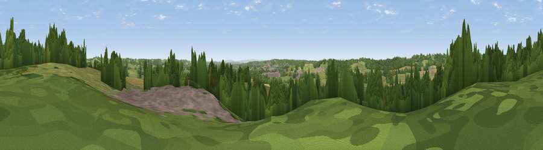

Viewpoint near Rowney Green
#30526 in England · top 47% of its area beats it · near Rowney Green · access?Where it is
The exact computed spot (SP 03925 70975). Click the marker for map links.
Public access: no public right of way or access land is recorded at this exact spot — it may be on private land. Computed from Natural England's CRoW access layer and OpenStreetMap rights of way — not the legal definitive map. Always verify locally.
The view, rendered

A 360° render of this exact spot computed from the terrain model, tree cover and land cover — summer colours, afternoon light, calibrated against photographs of famous viewpoints. Real trees, hedges and buildings will differ in detail.
The panorama
Grey silhouette: terrain skyline in each direction (720 bearings, Earth curvature and refraction included). Dashed green: skyline with trees (+15 m) and buildings (+8 m) as obstacles. Blue strip: how far the ground is visible on each bearing.
Where the view opens
Wedge length = distance to the farthest visible ground on that bearing (vegetation-aware). Rings at 10, 25 and 50 km.
What fills the view
49% grassland · 30% woodland · 13% cropland · 9% built-up
Angular shares of the visible panorama (visual magnitude), not map area. Landscape diversity 0.52 (0–1 Shannon).
Key numbers
More beautiful places nearby
The staircase of upgrades: each row has a higher view potential than everything closer. Driving times are estimates from straight-line distance, calibrated against real road routing — check an actual route before setting out.
| Place | Direction | Drive | Score |
|---|---|---|---|
| Viewpoint near Bordesley | SSW · 2 km | ~5 min | 43.6 |
| Cobley Hill | W · 3 km | ~7 min | 53.7 |
| Viewpoint near Cofton Hackett | NW · 6 km | ~12 min | 54.5 |
| Viewpoint near Hopwood | N · 6 km | ~12 min | 55.5 |
| Caspidge Hill | W · 6 km | ~12 min | 58.4 |
| Holywell Hill | NW · 9 km | ~17 min | 69.4 |
| Windmill Hill | NW · 10 km | ~19 min | 73.2 |
| Viewpoint near Clent | NW · 14 km | ~25 min | 73.8 |
52.33685, -1.94382 · source: screening · position refined by local search. Computed location — check access rights before visiting.